For my final project I completed two final pre-canned projects. The first is where I reimplement a neural algorithm of artistic style. In the second project I explore gradient-domain processing, a simple technique with a broad set of applications including blending, tone-mapping, and non-photorealistic rendering.
The first step of this project was finding a way to seperate an image into its style and content representations. When combined these have the ability to reproduce an image with a different style. Following Gatys, Ecker, and Bethge's paper A Neural Algorithm of Artistic Style I used a pretrained VGG-19 model. After every convolutional layer calculated style_loss and content_loss layers. This represented the similarity between convolutional activation value, through my iterations.
Below are the results of thge style transfer. The left is the input image, the middle is the styling image, and the right is the output. Overall I had pretty good results, however, I noticed sparse images struggle with images with lots of lines, corners, and features did better.
| Input Image | Style Image | Output Image |
|---|---|---|
| 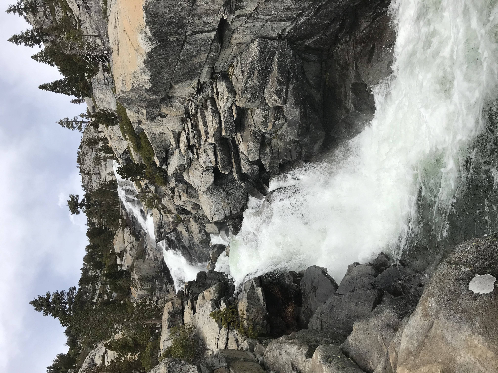 | 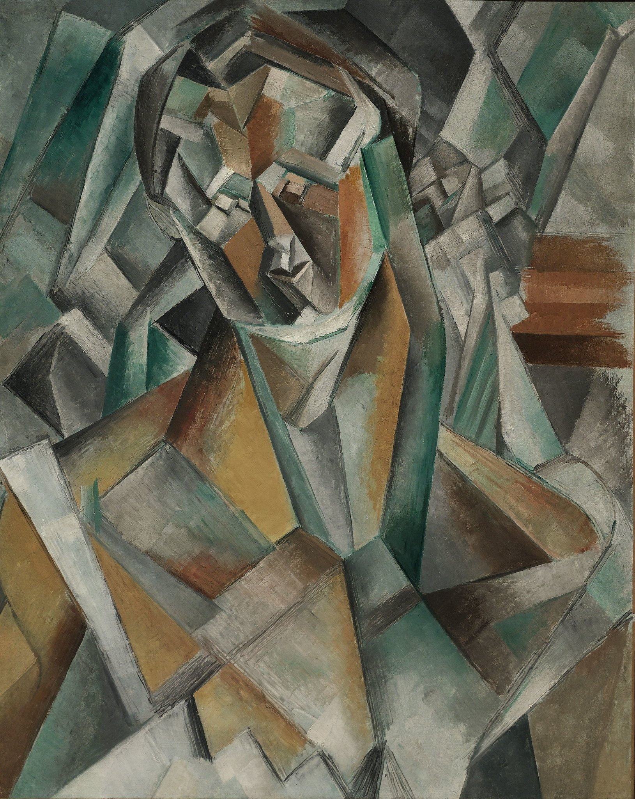 | 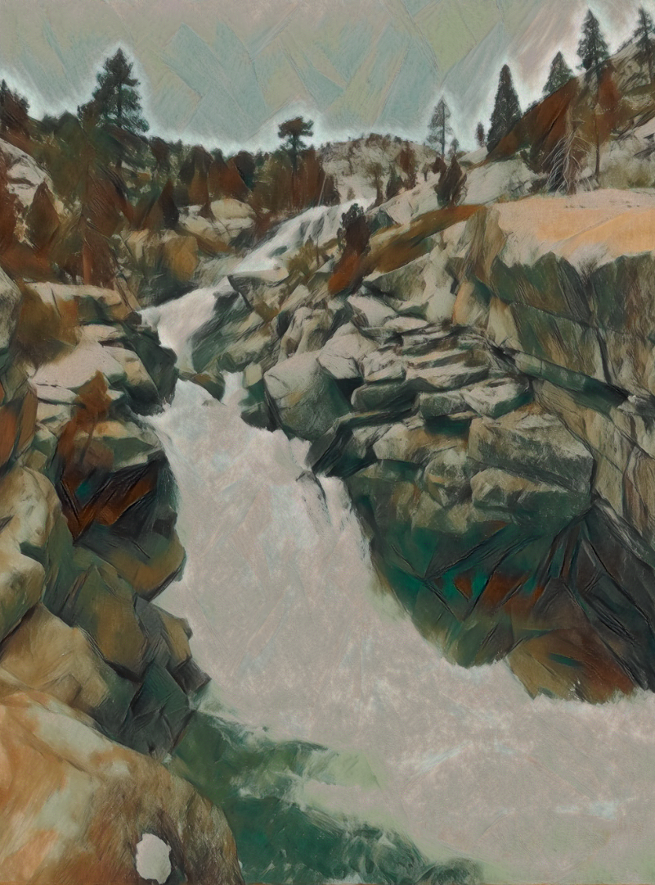 |
| 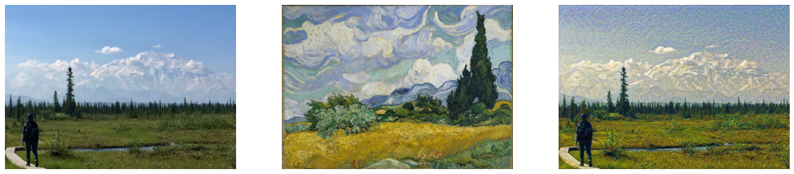 |
|---|
| 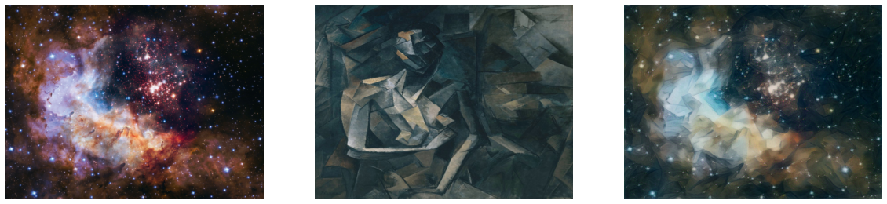 |
| 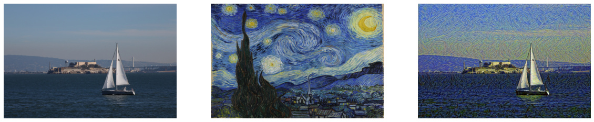 |
| 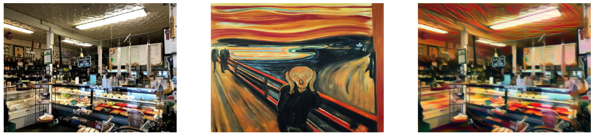 |
In this assignment I seemlessly blend an object or texture from a source image into a target image. In reality one can just copy and paste one cropped picture to another however this creates unpleasent seems. The goal of this project will be to get rid of these seems while maintaining the perception of the source region. I did this by writing the objective function as a set of least squares constraints in the form (Av-b)^2 and solved for v.
In this part of the project I implement gradient domain processing of a toy image. I started by computing the x and y gradients of an image and then used all the gradients along with pizel intensity to reconstruct the image v.
| Original Image | Reconstructed Image |
|---|---|
| 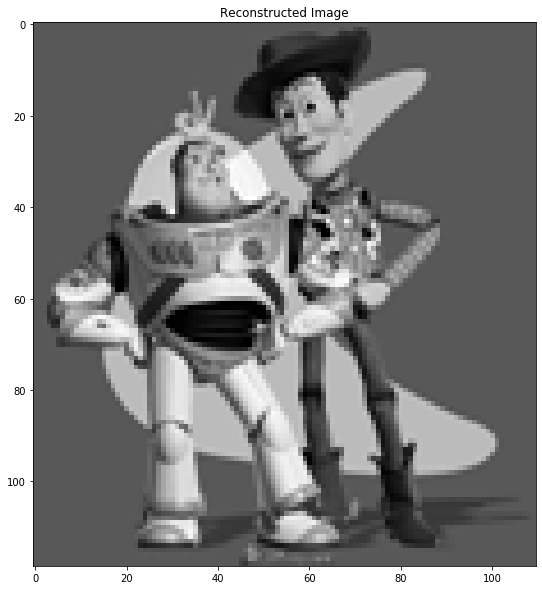 | |
In this part of the project I started by creating a function that selected the boundaries from the target and source regions, indicating what regions should be blended. I then translate the image
| 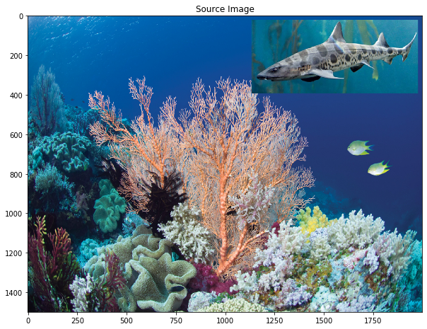 | 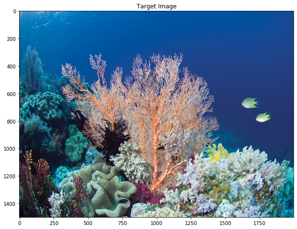 | 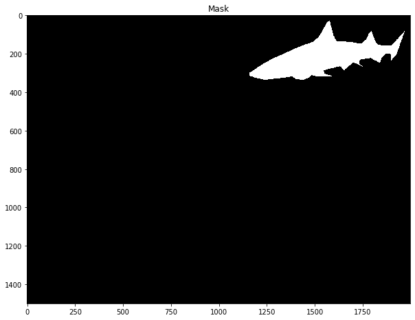 | 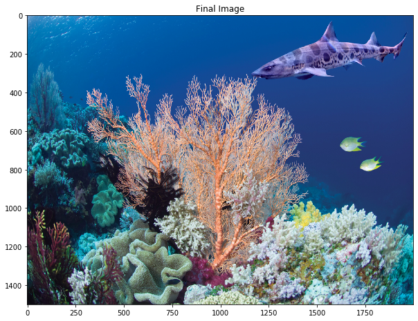 |
|---|---|---|---|
| 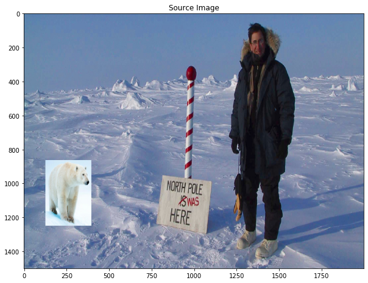 | 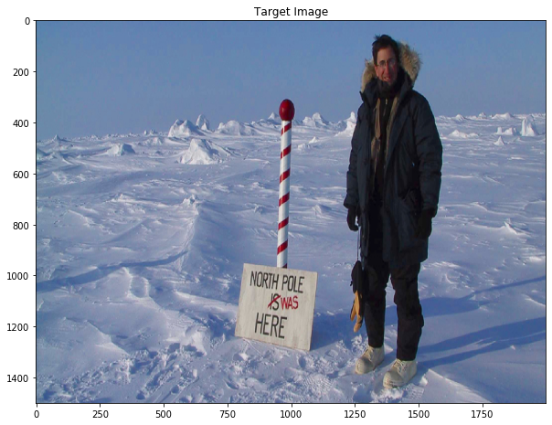 | 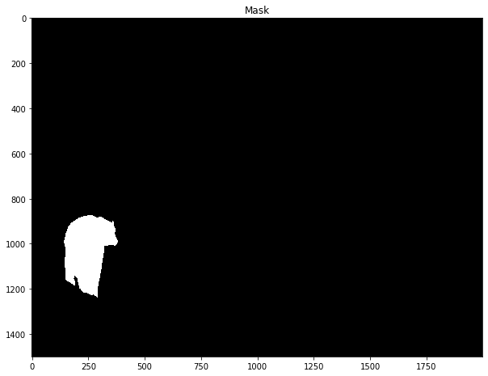 | 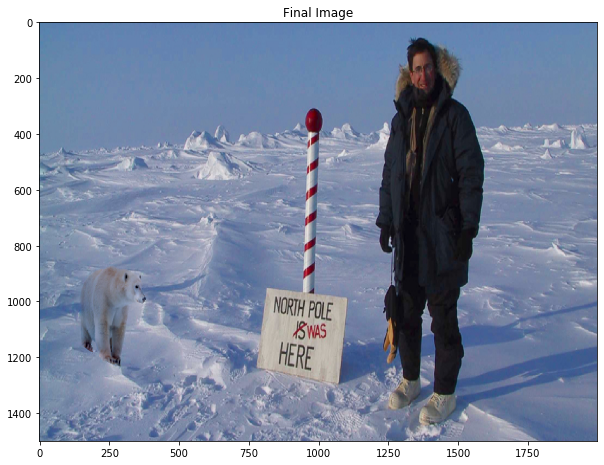 |
| 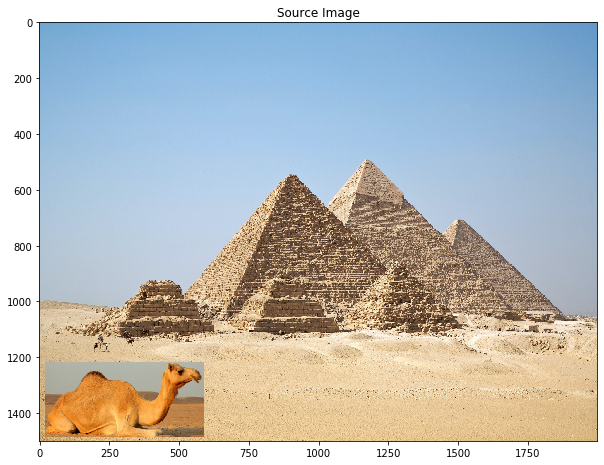 | 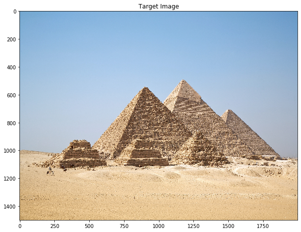 | 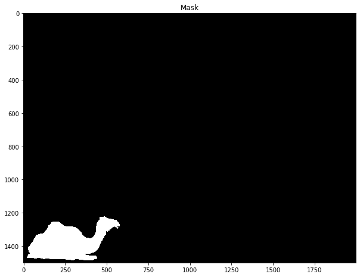 | |